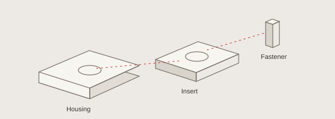
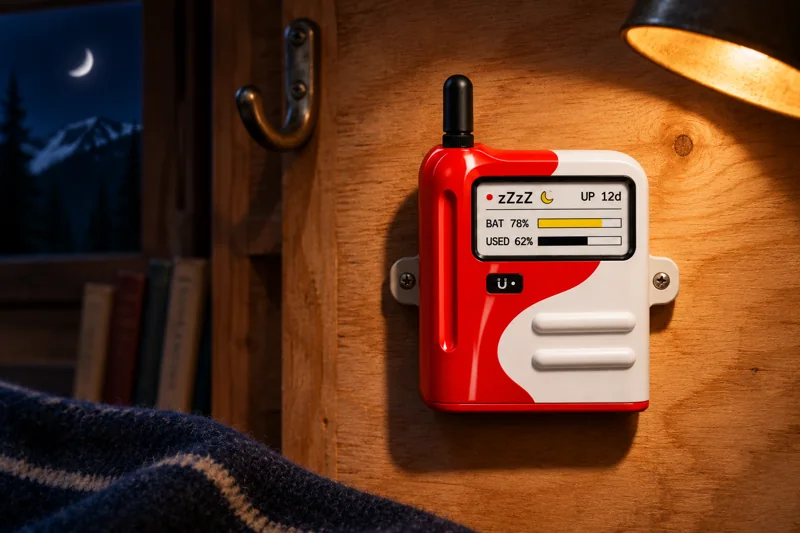
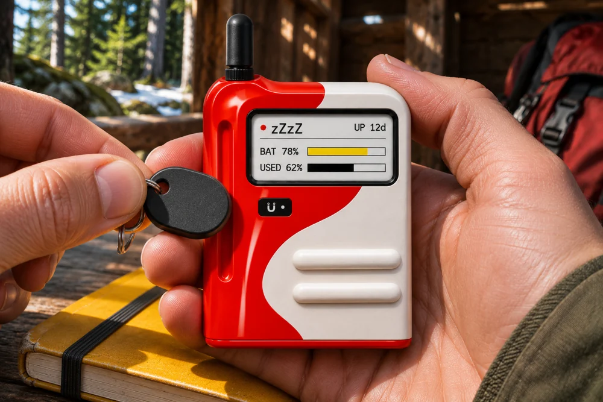
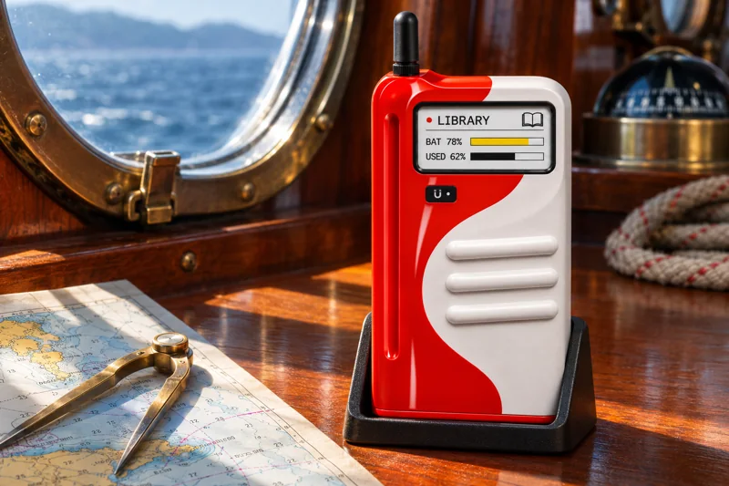
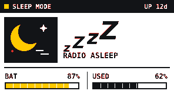

01 / Wikipedia
Follow your curiosity.
Articles, pictures, and links into almost any subject. An encyclopedia that travels with you.

An open offline library
Keep the useful things within reach.
Medical references, scientific papers, maps, books, and practical guides. Stored on a device you can take with you.
Explore the libraryThe library / 01
Scroll to see the collections load.
These are example collections for the device. Sources and editions will be selected for release; the animation shows the idea, not a live download.
01 / Wikipedia
Articles, pictures, and links into almost any subject. An encyclopedia that travels with you.
02 / Street maps
Keep the streets, terrain, and routes for the places you’re going.

03 / Medical wiki
Medical encyclopedias with sources and revision dates, available without a connection.
The medical collection is still to be selected. Its authors, publication dates, and source references belong with every entry.
04 / Medical journals & science
Open-access papers and journals, with their citations, publication dates, and corrections.
Medical literature · Science · Engineering05 / Technical manuals
Repair guides, service manuals, diagrams, and datasheets. The right revision for the thing in front of you.

06 / Books & reference
Books and manuals to browse locally or copy to a compatible reader.
EPUB and PDF · OPDS book catalogueThe full library
Keep audio, video, maps, printable parts, and editable CAD alongside the reading.
Semantic search finds related passages across the entire corpus, even when the wording differs.
Take a copy / 02
Browse over local Wi-Fi, or copy selected books and manuals to your own device.
 Kindle and reader compatibility
Kindle and reader compatibility
Leave it asleep / 03
The files you’ve copied stay on your reader. Omnipotent stays off until you wake it with the magnetic key.

Designed for a year between charges.
Off overnight. Off when idle. Wake it with the magnetic key for a handful of searches, then let it switch off again.
| Wi-Fi available each day | Energy-only estimate |
|---|---|
| 16 hoursOff overnight | 4 to 9 months |
| 8 hoursOff when idle | 8 to 19 months |
| 4 hoursShorter daily sessions | 15 to 38 months |
Three 3,500 mAh cells at 3.6 V give 37.8 Wh nominal. Allowing 20% for conversion losses and reserve leaves about 30.2 Wh usable.
The examples assume a connected average of 2 to 5 mA at 3.3 V, including Wi-Fi Target Wake Time (TWT), and full power-off between reed-sensor wakes. TWT availability depends on the network role and router.
These are illustrative energy budgets, not measured board runtime. Storage activity, off-state leakage, cell condition, and self-discharge affect the result.
How to use it
Browse while connected, or take a copy and leave the server off.


Join the device’s Wi-Fi from a phone, tablet, or laptop. Open articles and manuals, or play media from the library.
Browser → local Wi-Fi → library
Transfer compatible files to your own device. Once the copy is complete, you can keep reading with the server off.
Support depends on the Kindle model, file format, and transfer method. Direct Kindle transfer is still being worked out.
Reconnect to update selected collections. Automatic updates are part of the firmware plan.
Keep what you use. Refresh when connected.
Formats / Sources / Connections
Keep the originals, retain their sources, and choose how to connect.
01 / File formats
A full preparation catalogue, with original files kept alongside the searchable text.
The complete upstream Xberg registry, plus its code and configuration grammars. Extraction is prepared off-device; available extractors depend on the preparation build, including optional OCR, codecs, and transcription.
The full catalogue is available in the reference download below.
Collection preparation also accepts Parquet and compressed NDJSON. Native map and fabrication payloads are carried unchanged, separately from Xberg extraction.
02 / Sources
Wikipedia preparation is in the host prototype. Maps, research, books, and personal archives make up the wider source plan.
03 / Transmissions
Browser access, reader catalogues, folder access, discovery, and radio control each have a different role.
The device can provide a local hotspot or join an existing network. The S31’s TWT requester support depends on a compatible access point and the chosen network role.
OPDS is a catalogue and acquisition protocol. Version 2.0 uses JSON over HTTP. The Linux prototype serves a hardcoded OPDS 2.0 feed and EPUB for connection testing. Full collection catalogues and read-only WebDAV folder access are planned. Reader support varies by app and model.
The host prototype serves native bytes over HTTP. Byte-range support is planned for resuming copies and seeking within media. Playback depends on the receiving app and its codecs.
mDNS and DNS-SD help clients discover the library on a local network. DHCP and DNS serve a different purpose on its own hotspot. Collection preparation downloads over HTTP/HTTPS; automatic device refresh and source-feed harvesting are planned.
BLE GATT is intended for setup and status while the MCU is awake. The reed sensor provides the power-off wake path. LoRa is a low-bandwidth packet link; its application protocol remains a separate design choice.
A microSD card carries the prepared collection and original files. It is a physical transfer path, separate from network protocols.
The hardware
Designed to be fully weather-resistant, with a modular base for power and future extensions.

The main board and Rust firmware are in development. The charging board, enclosure fit, and final display panel are still to be selected or validated.
Download the 3D concept
Try a display state
Black, paper-white, yellow, and red.
A screen that keeps its last image while asleep.
Open hardware. Offline knowledge.